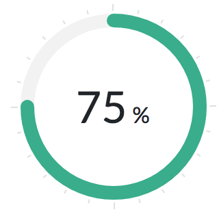

Kathy Smith
Kathy Smith
What is GVHD?
Graft-vs.-Host Disease (GVHD) may occur when the new stem cells (graft) recognize the tissues of your body (host) as foreign and starts a reaction. GVHD may cause a fever and commonly affects the skin, gastrointestinal tract (mouth, esophagus, stomach, and intestines) and liver.
No GVHD

Mild GVHD
Moderate GVHD
Severe GVHD
How is this calculated?
The doctors at Rutgers Cancer Institute of New Jersey have developed a system for calculating risk that is specific to you and your medical information.
Your Medical Records
| Name | Kathy Smith |
| Age | 40-49 years |
| Sex | Female |
| Diagnosis | Acute Myeloid Leukemia (AML) |